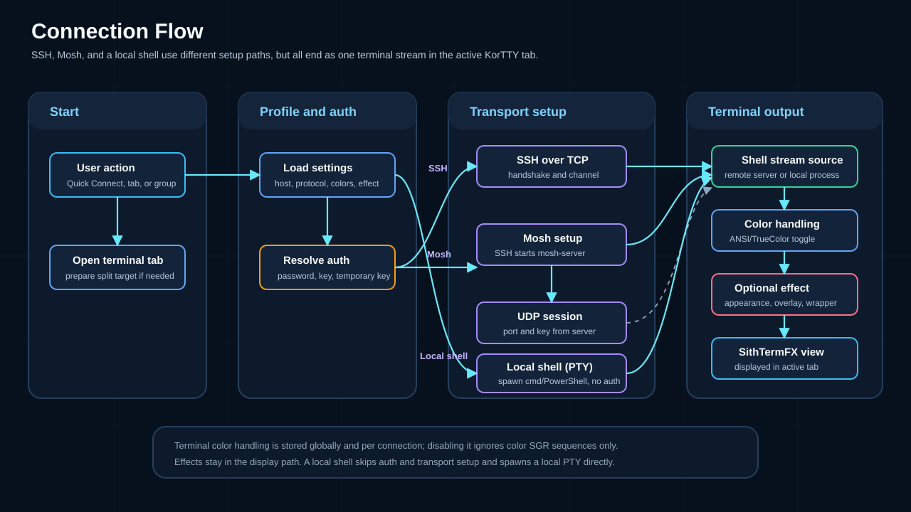
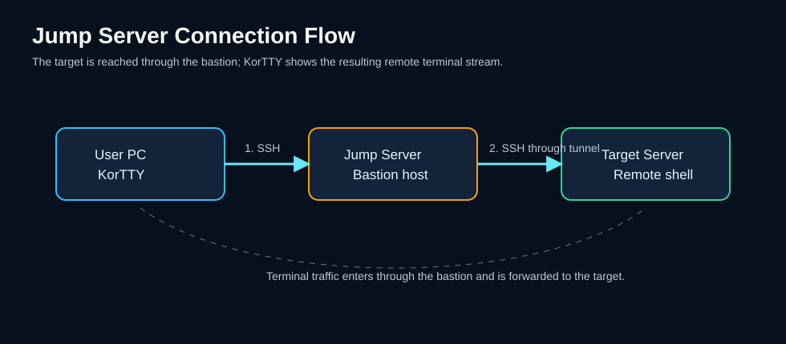

Connections¶
korTTY manages SSH, Mosh and local-shell connections through three entry points: Quick Connect, the Connection Manager, and saved Projects.

Quick Connect¶
Open with Ctrl+K (or Connections → Quick Connect…). Enter host, port, username and authentication, and connect without saving. Frequently used connections appear as quick buttons; a live search filters them. Saved connections can be picked from a dropdown with its own search field that matches name, host or tag (* works as a wildcard); a saved connection's tag is shown next to its name (🏷) in the dropdown and in the quick buttons' tooltips.
Connection Manager¶
Connections → Manage Connections… opens a searchable tree of saved connections (optionally grouped); the search field matches name, host, IP address or tag, with * as a wildcard. From here you create, edit, duplicate, delete, tag, import and export connections.
Creating / editing a connection¶
The connection editor has these tabs:
| Tab | Contents |
|---|---|
| Connection | Host, port, username, protocol (SSH / Mosh / Local Shell), authentication (password / key / keyboard-interactive), Host key verification (use default / verify / don't verify), group/folder assignment and an optional free-text tag. For Local Shell connections host, port, username and authentication are not required and are disabled. |
| Terminal Settings | Per-connection colors, font, ANSI/TrueColor handling, terminal effect |
| SSH Tunnels | Local / remote / dynamic port forwarding |
| Jump Server | Bastion-host chaining |
| Terminal Logging | Writes this connection's terminal output to a file — folder, format, daily rotation, compression and retention. See Terminal logging. |
| Journal | Per-connection session journal: enable journaling for this connection and configure its capture log and AI summarization |
| Window Geometry | Saved size/position for this connection |
| AI | Per-connection AI defaults: the AI profile and AI Skills used by terminal AI features on this connection |
Tags¶
Every saved connection can carry one optional free-text tag — a label such as prod, staging or a customer name — independent of the group/folder hierarchy. Set it on the connection editor's Connection tab (next to the group), or in bulk in the Connection Manager. Tags are stored with the connection in connections.xml and survive duplicating, exporting and importing.
- Visible — tagged connections show a 🏷 badge after their name in the Connection Manager tree and in Quick Connect's saved-connections dropdown; the tag also appears in the tooltip of the frequently-used quick buttons.
- Searchable — the Connection Manager search (local and Teamwork tabs) and Quick Connect's saved-connections search match tags as well as names and hosts.
- Bulk assign / remove — select one or more servers and choose Assign Tag from the context menu to tag them in one step. The prompt is pre-filled when all selected connections already share the same tag, and clearing that pre-filled value removes the tag. Remove Tag clears the tag and is enabled only while the selection contains at least one tagged connection. The same two entries on a folder's context menu apply to every connection in that folder, subfolders included.
- Export by tag — once at least one tag exists, the Connection Manager's export dialog offers a Connections to export choice: keep the pre-selected connections, or export all connections with these tags — pick one or more tags from the list, the header's connection count follows the selection live, and the export button stays disabled while nothing matches.
Protocols¶
Standard SSH via Apache MINA SSHD. Supports password, public-key and keyboard-interactive authentication, keep-alive, and OSC 8 clickable hyperlinks.
Roaming, latency-friendly Mosh transport (mosh4j). The Mosh backend is bundled in native builds; existing connections need no migration.
Opens the local machine's shell in a terminal tab (no network) via a pty4j-backed pseudo-terminal. Host, port, username and authentication are not required. See Local Shell below.
SSH host-key verification¶
Interactive Terminal and SFTP connections use the same trust-on-first-use (TOFU) host-key store. Mosh uses it for the SSH bootstrap as well. Trust is keyed by the normalized host name and port, so different saved connections to the same endpoint share one decision.
On the first connection, korTTY shows the key algorithm and OpenSSH SHA-256 fingerprint. Verify that fingerprint with the server administrator before selecting Yes; No is the safe default. A matching key is accepted silently on later connections. If the server presents a different key, korTTY hard-blocks the connection, shows the expected and offered fingerprints, and does not retry because repeating the attempt cannot resolve a possible man-in-the-middle attack.
The first-use prompt can be turned off for hosts where it is not wanted — set Host key verification on the connection editor's Connection tab or in Quick Connect (Use default / Verify / Don't verify), per group via the Connection Manager's group context menu, or globally under Settings → Terminal. The relaxation is accept-new only: an unknown key is pinned without a prompt, but a key that differs from one already pinned for that host is still hard-blocked. See Relaxing host-key verification.
The interactive pins are stored atomically in ~/.kortty/ssh-host-keys.properties, with cross-process locking so two korTTY windows cannot overwrite each other's decisions. These endpoint-based pins are separate from the connection-ID-based pins used by unattended JobScheduler SSH, SFTP, and Rsync jobs.
When a new split connection is opened, the SSH handshake runs on a worker while a progress dialog keeps the JavaFX interface responsive. This allows both host-key confirmation and keyboard-interactive authentication to complete without blocking the UI.
Local Shell¶
A Local Shell connection spawns a local pseudo-terminal (PTY) on your own machine instead of connecting to a remote host. It is selectable in both Quick Connect and the Connection Manager; for these connections host, port, username and authentication are not required (and are disabled in the dialogs), and no password prompt is shown.
Choosing a shell¶
| Platform | Options |
|---|---|
| Windows | PowerShell (default) or cmd.exe. Git Bash, Cygwin and WSL are also offered as presets — but only when actually installed (Git Bash/Cygwin are detected via their usual install locations / PATH; WSL appears only when wsl.exe is present and at least one distribution is installed). |
| macOS / Linux | Defaults to your $SHELL (falling back to /bin/zsh or /bin/bash). |
A free-form Custom command field accepts any executable with arguments (e.g. pwsh.exe, wsl.exe -d Ubuntu, a Git Bash path), and an optional start directory can be set. The command parser is quote-aware, so shell paths containing spaces — like "C:\Program Files\Git\bin\bash.exe" — launch correctly.
When korTTY runs from its Flatpak package, the local shell is started on the host through flatpak-spawn --host, including the selected start directory and terminal locale. The package has host-filesystem access so terminal file actions can use host paths. Because the sandbox-side process ID belongs to flatpak-spawn rather than the host shell, current-directory tracking uses trusted absolute prompt paths instead of reading /proc/<pid>/cwd; if no safe host path can be established, path-dependent actions stop with an explicit error.
Terminal features in local shells¶
Terminal logging and recording, plus the AI input/data hooks, work for local shells via a shared ObservableTtyConnector interface. Typed and pasted agent requests use the same byte-level input path, and terminal file actions plus local agent runs follow the interactive shell's current directory. macOS/Linux use the local process directory; native PowerShell and cmd use absolute prompt paths. WSL, Git Bash, Cygwin, and custom commands are best-effort when their shell path namespace differs from the host filesystem, and an unmappable directory produces an explicit error instead of a wrong-file fallback. Features that depend on an SSH channel stay SSH-only.
AI Agent in local shells
The AI Agent and AI Planning also run in local shells on Windows, macOS and Linux — see AI assistant.
Tunnels & jump servers¶
- SSH tunnels — forward ports through the connection: local (
-L), remote (-R) or dynamic / SOCKS (-D). - Jump server (bastion) — route the connection through an intermediate host; SSH terminal and SFTP sessions both hop through it. See Jump Server.

Import from other clients¶
Connections → Import… reads connection files from MTPuTTY, MobaXterm and PuTTY Connection Manager, with group filtering and credential handling.
More to come
This page is part of the scaffolded guide. The full feature library — SFTP, snippets, JobScheduler, AI assistant & tools, terminal recording, security, and the complete settings tables — is being filled in next.